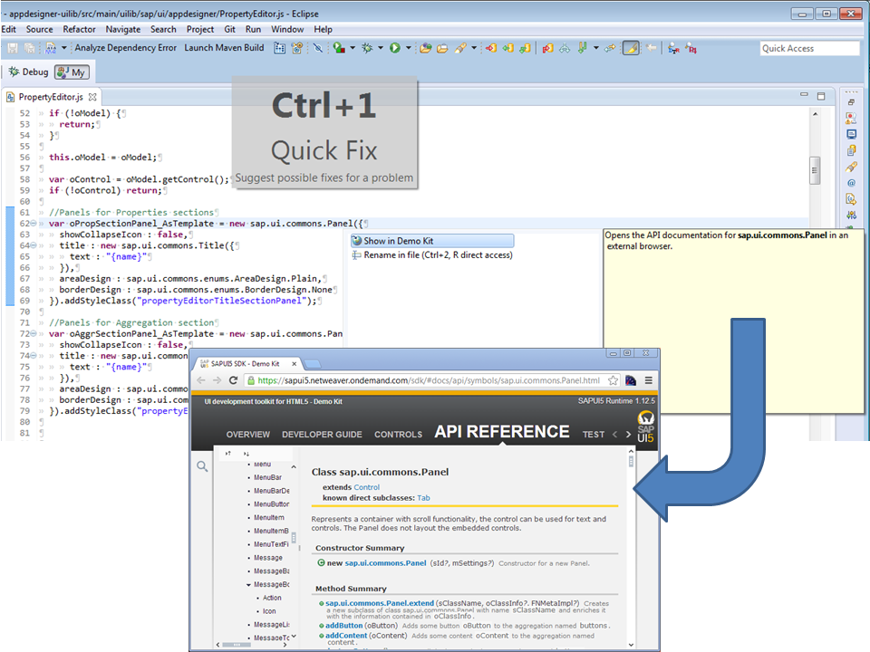

Linking Eclipse Editor to Demo Kit
Prerequisites
- You have installed the SAPUI5 Application Development feature in your Eclipse installation.
Display in Demo Kit
When ever you have some JS code using SAPUI5 controls, you can place the cursor on the complete control name (beginning with sap.). Pressing CTRL+1 Eclipse will present you all available Quick Fixes. The same works for XMLViews in the Eclipse XML Editor. One of it is the Display in Demo Kit Quick Fix, that will open the API documentation of the control in the Demo Kit:

And also for XMLViews: